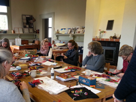

Hantverket kursgård

Vi ordnar kurser och föreläsningar i framför allt textilt hantverk och, när tillfälle gives, även i småslöjd som får hänföras till trä- och metallslöjd. Vi anlitar alltid de främsta hantverkarna inom området som föredragshållare eller kursledare.
Unna dig en kurs i vår härliga miljö, upplev en trevlig helg med likasinnade!
Först ut i år är Britt-Marie Christoffersson
- Stickning - ett hantverk att utveckla
- Britt-Marie Christoffersson inspirerar oss att utveckla vår stickning. Hon har som tagit stickningen till en helt ny nivå, genom kombination av enkla tekniker
har hon givit stickningen ett helt nytt uttryck
17-19 april 2014 - Skånskt Yllebroderi
- Eva Olsson från Skånes Hemslöjd kan skånsk yllebroderi som ingen annan. Brodera stort eller smått!
20-21 maj 2014 - Svampfärgning
- Brita Ruist tar oss på en spännande resa i svampfärgning. Vi börjar med att plocka svampen, kokar färgbad och färgar därefter vackra ullgarner.
2-5 september 2014